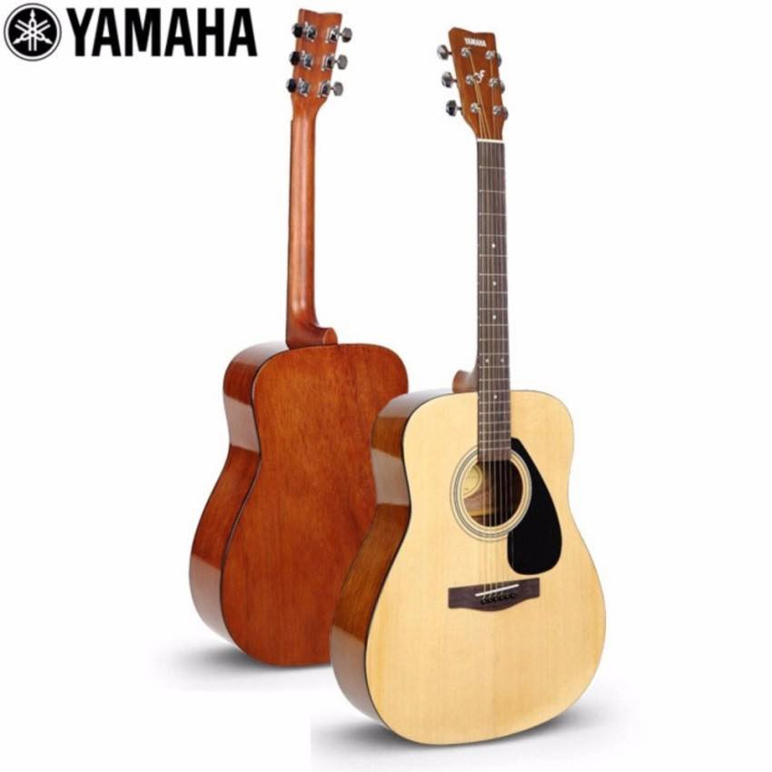

Yamaha F310

Yamaha F310 กีต้าร์ครูของนักดนตรีอาชีพหลายคนที่เติบโตมากับรุ่นนี้ มีชื่อเสียงยาวนานเพราะผลิตมาเกิน 10 ปี แบรนด์ Yamaha เชื่อถือได้ในคุณภาพและเป็นที่รู้จักกันในแทบเอเชียเป็นอย่างมาก
มีเอกลักษณ์ของเสียงที่โดดเด่น ให้เสียงที่เป็นอะคูสติก ใสโทนเสียงเนี๊ยบเกินราคา เอาง่ายๆถ้าไม่ดีจริงไม่มีเสียงบอกต่อมาถึง 10 ปีแน่นอน วัสดุไม้ส่วนใหญ่เป็นไม้เมอรานติซึ่งเป็นไม้อินโดนีเซีย
จึงทุ่นเรื่องต้นทุนไปได้มาก ทำให้ราคาออกมาในระดับที่มือสมัครเล่นจับต้องได้ ข้อดีอีกอย่างของทาง Yamaha คือคอจะเล็กในแบบคนเอเชีย บรรดามือใหม่ที่มีปัญหาเรื่องกางนิ้ว เล่นง่ายเหมาะสำหรับหัด
เป็นรุ่นต่ำสุดของ Yamaha ที่ให้ซาวด์ยอดเยี่ยมไม่เสียราคาแบรนด์ดัง